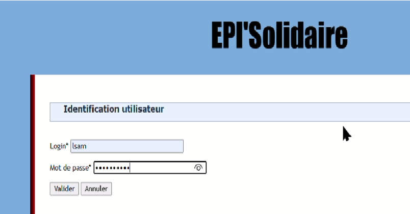
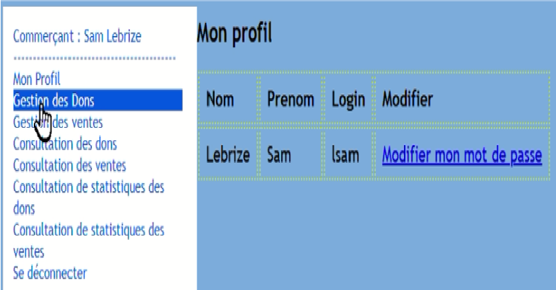
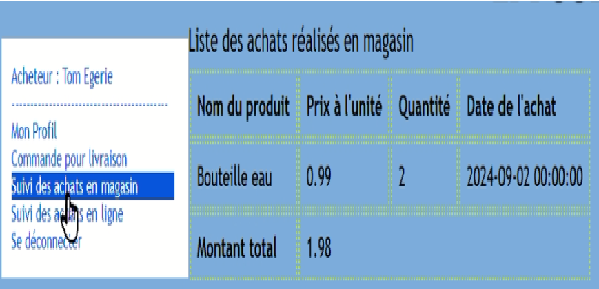

GetCet epiSolidaire
Présentation du projet
Dans le cadre d'un projet collaboratif, nous avons conçu une application web en PHP avec une architecture MVC dédiée à la gestion d'une épicerie solidaire mise en place par la municipalité.
Cette application est réservée aux utilisateurs autorisés (maires, secrétaires, commerçants, acheteurs et épiciers) et permet :
- La gestion des dons
- Le suivi des ventes
- La gestion du stock
- Un suivi détaillé des activités
Le développement front-end repose sur HTML, CSS et JavaScript, offrant une interface claire et intuitive.



Autocritique et Bilan
Nous étions deux pour ce projet et elle nous a permis de perfectionner notre maîtrise de l'architecture MVC. Cependant, nous avons rencontré des défis liés à l'optimisation des requêtes SQL et à la gestion des accès utilisateurs.